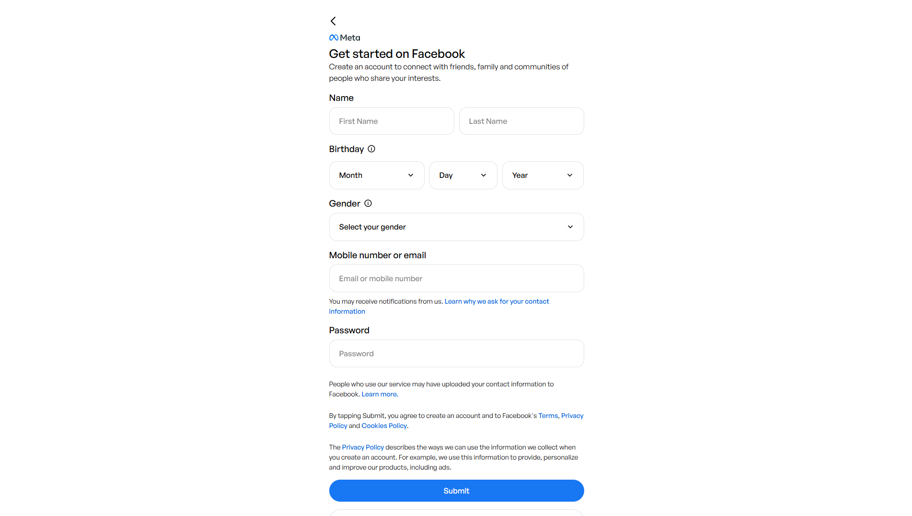
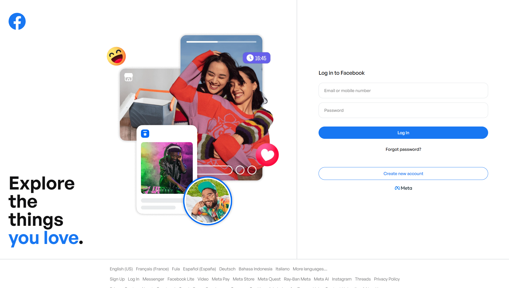
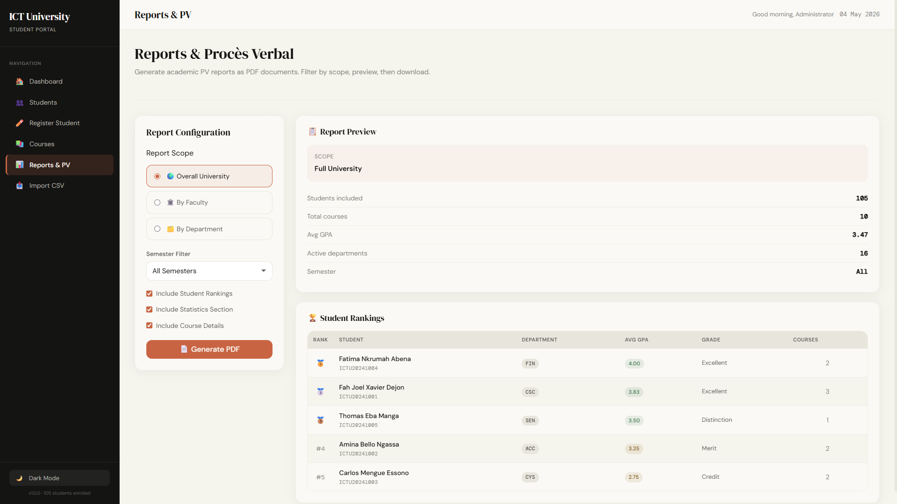
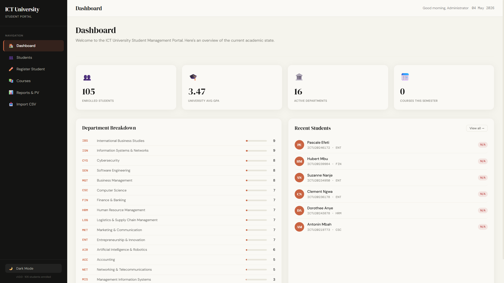
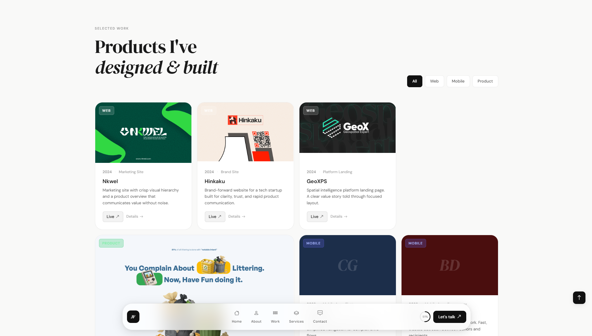
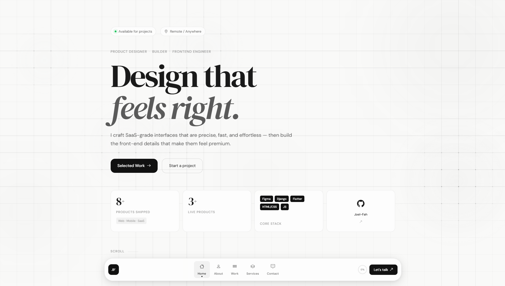
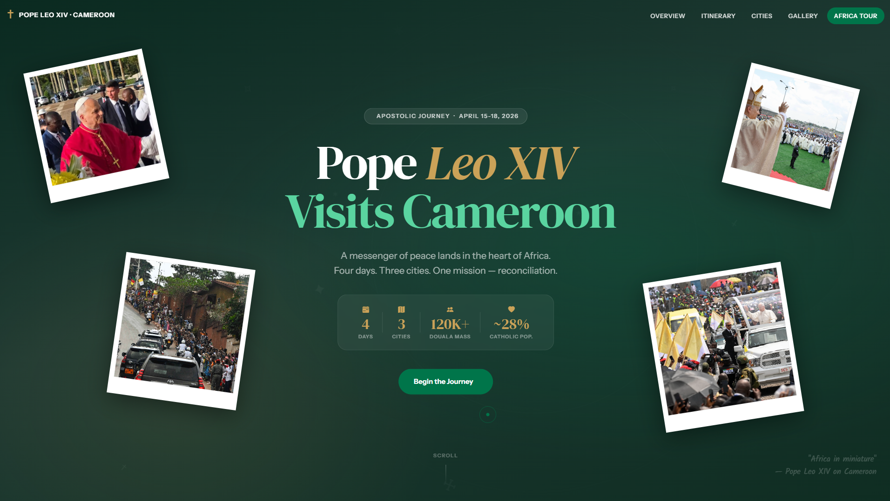

Facebook Clone
My first true trial in taming complex layouts. Recreating Facebook's iconic interfaces taught me the art of pixel-perfect precision and the power of modern CSS architecture.
View ProjectWelcome to my digital gallery. Every project exhibited here holds a story—a unique chapter in my evolution as a web developer, showcasing challenges tackled and new heights reached.


My first true trial in taming complex layouts. Recreating Facebook's iconic interfaces taught me the art of pixel-perfect precision and the power of modern CSS architecture.
View Project

Where functionality meets flow. I designed this administrative dashboard to discover how interactive components and thoughtful user flows can bring raw data to life effortlessly.
View Project

A space to breathe. I crafted this template to strip away the digital noise, creating a serene environment where the creative work itself is the only voice that truly speaks.
View Project
A tribute woven in markup. This historical landing page allowed me to blend semantic HTML with elegant, respectful styling to honor Pope John Paul II's unforgettable visit.
View Project